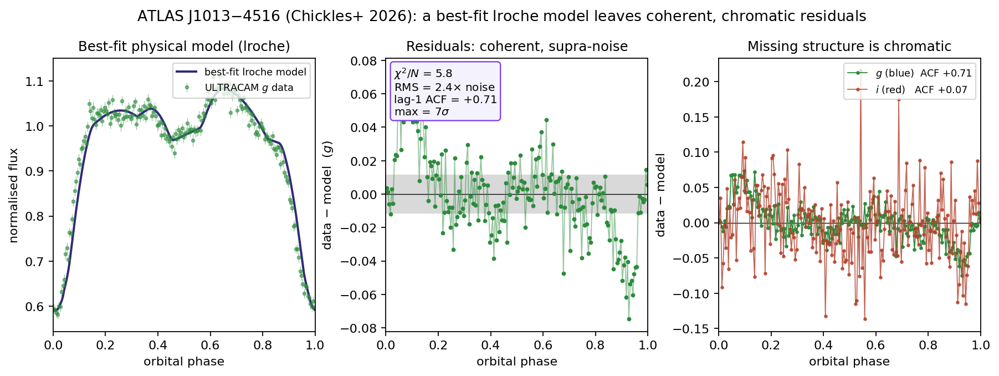
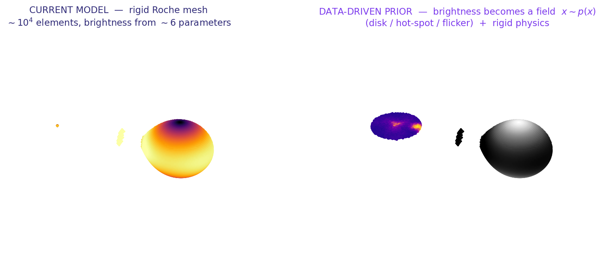
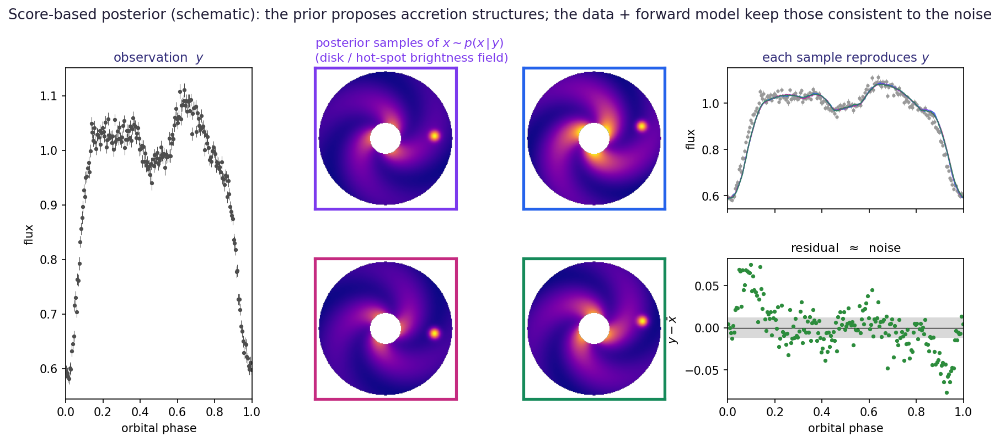

Porting Perreault-Levasseur's score-based lensing program
to high-speed binary light curves
Emma Chickles · preliminary motivation deck · built on lcurve-lite + the original lroche
As data become higher-SNR, higher-cadence, higher-resolution, the strategy [simple physical model] + [Gaussian residuals] + [a few nuisance parameters] starts to fail — the data resolve structure the parameterization was never built to describe.
Lensing (Perreault-Levasseur, AstroAI 2026): the source galaxy, lens mass distribution, PSF/noise, and population prior are too high-dimensional or too structured for analytic forms.

ATLAS J1013$-$4516 (Chickles+ 2026), ULTRACAM. Best-fit lroche (run live on hypernova):
χ²/N = 5.8, residuals 2.4× the photon noise,
lag-1 ACF = +0.71 (coherent, not white), up to 7σ — and
chromatic (strong in $g$, weak in $i$). Missing physics (evolving hot spot / stream / flickering), not bad fitting.
We observe \( y = A(x) + n \) and want the posterior
\[ p(x\mid y)\;\propto\; \underbrace{p(y\mid x)}_{\text{likelihood / noise}}\;\underbrace{p(x)}_{\text{prior}} \]Learn the prior score with a diffusion / denoising model:
\[ s_\theta(x,t)\;\approx\;\nabla_x \log p_t(x) \]The posterior score splits into a likelihood term + the learned prior:
\[ \nabla_x \log p(x\mid y)\;=\;\nabla_x \log p(y\mid x)\;+\;\nabla_x \log p(x) \]Sample reconstructions by annealed Langevin / reverse SDE \( \;dx = [\,f - g^2 s_\theta\,]\,dt + g\,d\bar w \). (Adam, Hezaveh, Perreault-Levasseur 2022 — source galaxies.)
SLIC (Legin et al.): learn the likelihood/noise score \( \nabla_x \log p(y\mid x) \) from real noise realizations — enabling non-Gaussian, correlated, spatially varying noise.
Population-level updating. An incomplete prior + sufficiently informative data reveals that the prior is missing a real class (the "4σ from lensed images" example) — i.e. discovery falls out of the same machinery.
| symbol | strong lensing | accreting binary |
|---|---|---|
| \(y\) | lensed image | high-speed multiband light curve |
| \(x\) | source-galaxy surface brightness | disk / hot-spot / stream brightness map |
| \(A\) | lens equation | lroche forward model — differentiable in lcurve-lite |
| \(n\) | correlated image noise | astrophysical flickering + instrumental noise |
| \(p(x)\) | galaxy population prior | accretion-structure population prior |
| OOD | new source/lens class | new light-curve morphology / new system |

Left: the real J1013 mesh (lcurve-lite) — $\sim$10$^4$ surface elements
whose brightness comes from $\sim$6 analytic parameters. Right: the new axis —
the disk / hot-spot / flicker brightness becomes a high-dimensional field \(x \sim p(x)\) with a learned prior,
while masses, inclination, and period stay rigid.

Schematic of the score-based posterior (cf. Adam+ 2022's source-galaxy reconstructions):
the learned prior proposes accretion structures; the lroche forward model + data keep only
those consistent to the noise. Many structures explain the eclipse equally well — the posterior captures that,
instead of collapsing to one best-fit.
lcurve-lite is a GPU/gradient-friendly lroche,
the substrate the likelihood-score term \( \nabla_x\log p(y\mid x) \) needs.Principle throughout: keep the physics rigid, make the nuisance flexible — still infer masses / inclination / period; let the learned component absorb only the structured nuisance.
| # | stage | lensing analog |
|---|---|---|
| 0 | residual modeling (underway) | look at residuals before assuming Gaussian noise |
| 1 | flexible disk/hot-spot component | learned source morphology |
| 2 | learned noise score | SLIC |
| 3 | population prior | galaxy population prior |
| 4 | discovery / anomaly bridge | OOD reveals a missing class |
| 5 | diffusion prior + forward-model conditioning | full score-based posterior |
Galaxies are abundant → learn the prior from real images.
Accreting binaries are rare → invert the strategy:
Simulation-pretrain the prior with lcurve-lite, then hierarchically update on
the few real systems. Per-system before population. This data-budget inversion is the methodological contribution.
The diagnostic + discovery machinery is already built and interactive:
period-aliasing demo · why gradient period-search fails · period-diagnostic (ICML 2026)
lcurve-lite is near numerical parity.Refs: Adam+ 2022 (score-based source priors); Legin+ (SLIC); Song+ 2021 (score SDEs); Marsh / Copperwheat+ 2010 (lcurve). verify exact citations.